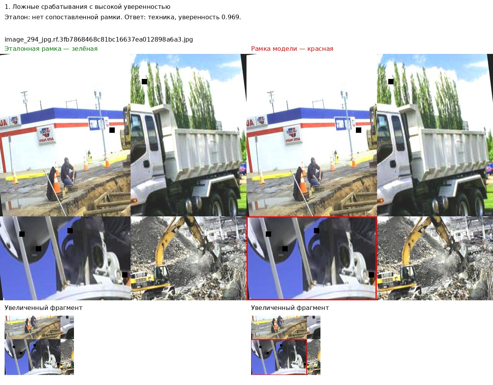
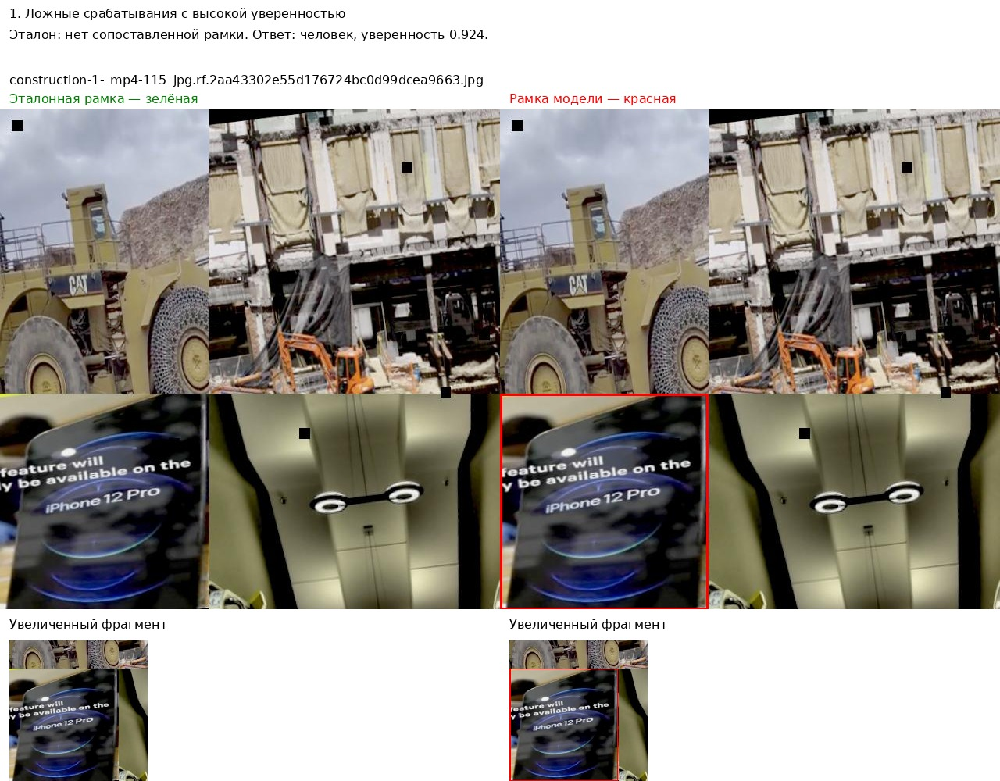
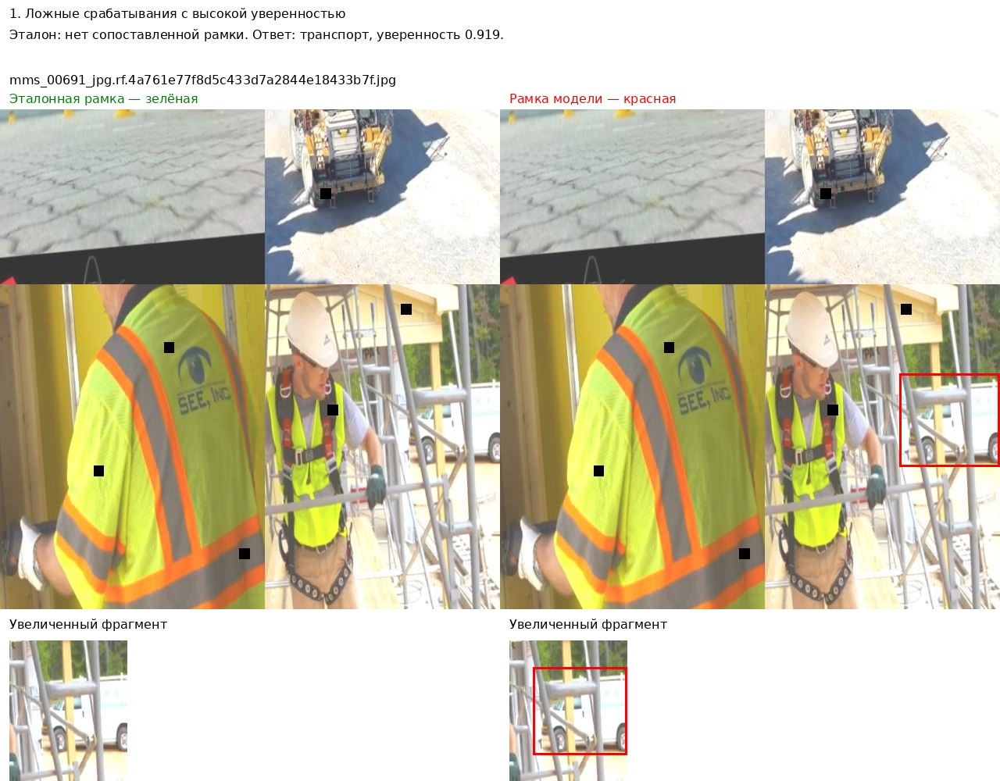
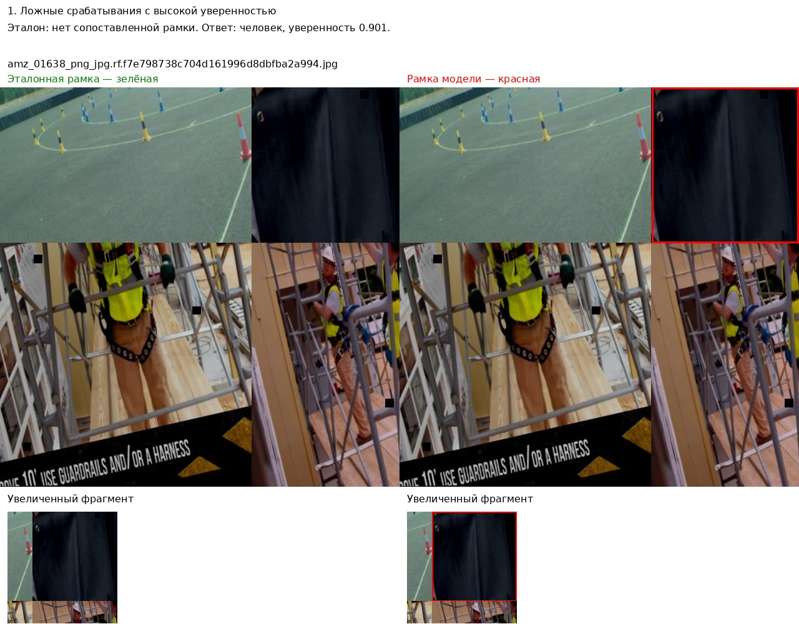

Все галереи1. Ложные срабатывания с высокой уверенностью
Нет сопоставленного эталона, уверенность ≥ 0.75.
Слева эталон, справа ответ модели. Показаны только рассматриваемые рамки.
Кандидатов: 53; показано кадров: 4.

image_294_jpg.rf.3fb7868468c81bc16637ea012898a6a3.jpg
Эталон: нет сопоставленной рамки. Ответ: техника, уверенность 0.969.
construction-1-_mp4-115_jpg.rf.2aa43302e55d176724bc0d99dcea9663.jpg
Эталон: нет сопоставленной рамки. Ответ: человек, уверенность 0.924.
mms_00691_jpg.rf.4a761e77f8d5c433d7a2844e18433b7f.jpg
Эталон: нет сопоставленной рамки. Ответ: транспорт, уверенность 0.919.
amz_01638_png_jpg.rf.f7e798738c704d161996d8dbfba2a994.jpg
Эталон: нет сопоставленной рамки. Ответ: человек, уверенность 0.901.